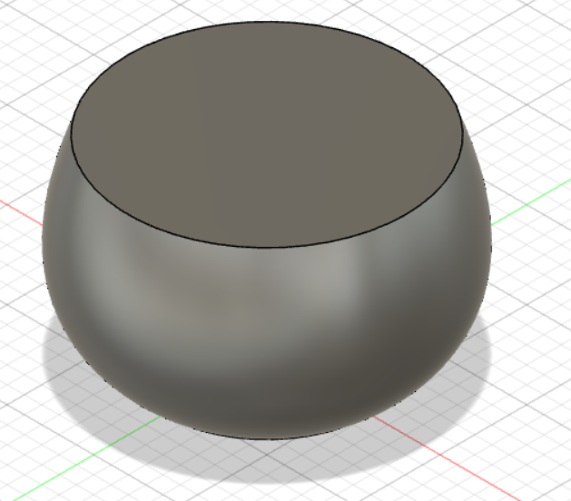
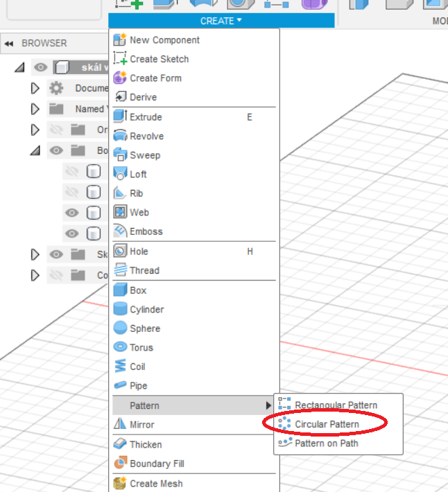
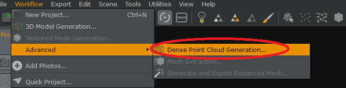
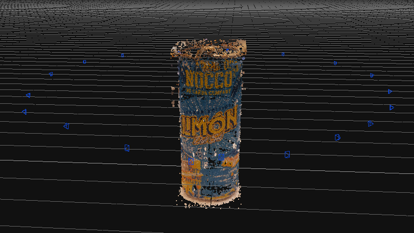

3D Printing and scanning
The purpose of this project was to design a 3D object (up to 100g of material) that could not be made with the "addative vs subtractive" method and 3D print that object. Another part of the project was to 3D scan an object. The final part of the project was to print a 3D object that helps to determine the constrains of the 3D printer. This projecta was worked in the course Manufacturing Processes (VÉL403G) at the University of Iceland.

Determine the constrains of the 3D printer
Determining the constrains of the 3D printer was worked in a group. My groupmembers were Hrannar Þórarinsson, his website and Magnús Snær Ríkarðsson, his website.
We went on to Thingiverse and found this printertest and decided to use that. We downloaded that file and went to fablab Reykjavik
Since all the 3D printers in fablab would be occupied all day, the day we went there. We were told to see the same thing printed by another group and determine the printers constrains from that object. This is the object that we used
As can be seen, it would not be recommended to print something that has more that a 75° slope or things that are really close together.
The beginning
The first thing that I needed to do was to find an idea for an object to buid. I started to google cool 3d prints and looked on the web until I found something that I would like to make. After a bit of googling I found this website and I liked the object number 17.

What I liked most about the design was the pattern, so I decided to make a bowl with a similar pattern but add my own style to it.
I decided to make the object in the program Fusion 360. I had a little bit of experience with that program since it is the same program that I used in my 2nd project on this website called "Laser cut pressfit project".
Fusion 360
Since I had never designed a 3D object in Fusion 360, I decided to go to youtube and try to find some tutorials. I found this video which helped me greatly, in that video someone is making a cage over lightbulps and I could use a lot of the same methods in designing my bowl.
I started of by creating a sketch on a vertical plane and drew a vertical line. Then I drew 2 horizontal lines, one from the top of the vertical line and one ftom the bottom and after that I created a spline.
I connected the spline to the two horizontal lines and played around with the line until I got a shap that I was happy with. I set the length of all the lines according to parameters that I created, so that I could easily change them if I do not like the look of the bowl later on. After all that was done, I had created this sketch.
I then needed to somehow extrude the object in a circle. I did that by selecting "Revolve".
I then selected the sketch as the profile, and the vertical line as the axis.
After that, I was left with a body that looked like this.

Since this is supposed to be a bowl, this object needs to be hollow. I fixed that by clicking on "Shell".
After that, I selected the top surface of the bowl as the "Faces/Body" and decided to set the thickness to 2mm.
Now the design should have a nice "bowl look" like this.
Then I created an offset plane from the top of the bowl and offsettet it down 6mm.
After that, I clicked on "Split body".
I selected the only body that I had as the „Body to split“ and selected the plane that I created as the „Splitting tool“.
Now the body had been split into two different bodies and I did excactly the same thing to split the body from the bottom and was left with three differt bodies as seen in the following photo.
Since I didn't want to make a boring and regular bowl, I decided to create a cool pattern on the middle section of the bowl. To do that, I created a new sketch on the large body, on a vertical plane. Then I clicked on „Project“ and selected bodies as the „selection filter“ and chose the body that is the middle section.
I then hid the body and drew two paralell lines on the sketch from top to bottom.
After that, I clicked on extrude and selected the space between the lines I derw and dragged it through the main body. I then set the direction to symmetric and the operation to intersect.
Now the base for my pattern looked like this.
I wanted to make this pattern go all around the bowl, and to do that I clicked on "Circular pattern".

Then I set the „type“ to bodies, for the bodies I selected one of the pattern-line that I had created, and for the axis I selected the z-axis line. I decided to set the quantity to 50 because I liked the way that looked, but that can always be changed later.
I then did exacly the same thing to the other original pattern-line that turns in the opposite way and after that I was left with an object that looked like this.
Ultimaker cura
Now that I was happy with my object I downloaded ultimaker cura and watched this video. That video is from one of the members at fablab Reykjavik and it helped a lot in regards to most of the settings that are available in ultimaker cura. I followed the settings in the video.
Now I had to export my fusion 360 design into a format that is 3D printable compatable with Ultimaker Cura. I selected all the bodies and combined them in a single object and eventually saved it as STL.
I uploaded the STL file into Ultimaker cura and set the thickness to 0,2 and the infill to 10%.
I immediately spotted a problem, the object was 145g and took about 23 hours to print.
I had to make some changes in my design, the changes that I did were the following:
• I changed the height to 100mm from 110mm.
• Change the bottom radius to 50mm from 60mm.
• Change the top radius to 60mm from 80mm.
• I changed the spline line since the whole object was smaller.
• I changed the quantity of spirals to 30 from 50 for both directions.
I exported the file after the changes as STL and now I was within the material limits, but the time was still extremely long.
I decided to change the quantity of spirals from 30 to 20 and exported the file again but the time got shorter but I felt like it was still too long.
I talked to one the staff at fablab and he told me that I did not need any support on the design and that I could set the build plate adhesion type to none in the printing settins. That reduced the printing time even further to a printing time that I thoght was acceptable.
This objects is only 56g which is whithin the given amount of material, and this object would not be able to be created using the "addative vs subtractive" method, so it fulfills the constrains of the project.
3D Printing
When I went to 3D print this object, I got a very good instructions on how the printer works. I uploaded the design on an USB key that is then plugged into the printer. This is the printer that was used.
I started printing late in the day and since the printing takes 8 hours, I came the next day to pick upp the bowl. When is saw the bowl I was surprised because it looked like this.

A member af the fablab team that was present when I arrived told me that the reason that the bowl was not completed, was not because there was an error in the design, it was due to the fact that the knob on the printer that spits out the plastic got jammed. Because that happened and I really wanted to print the bowl, I decided to weigh the unfinished bowl that the printer printed, it weighed 41 grams an since the full design is only 56 grams, it would still be within the given 100 grams. I decided to print the design again, I came back a few days later and started printing the object again.
I came back a few days later and was very happy with the results, the printer did not jam this time and the bowl was printed perfectly. I am very happy with the results and below is a photo of the bowl.
Design files
Here are all the files I used in this part of the project: Design files - 3D Printing
3D Scanning
In the beginning, I decided to use Regard3D to scan the object because I saw that some of the older students did that with good success. I did however not work greatlt for me as I scanned 4 different objects in that program with horrible results. I did not document all of the scans, but I documented the last scan I did, which was a scan of my samsung headphones where I took 74 photos.
I followed the tutorial on the Regard 3D website and the first thing I did was to start a new project.
I decided to name the project "headphone".
After that, I clicked on "Add picture set" and selected all the photos that I took of the headphone. After that I clicked on "Compute matches" and set Keypoint sensitivity and Keypoint mathching ratio to ultra to get the best results.

After that I pressed triangulate. That creates a point cloud of the object which can be seen below.
Then I used the densification command. That creates a dense pointcloud and that makes out the object. The following dialog appears and I kept the original settings.
Here is the result of the densification.
Next I wanted to generate a surface that connects most of these points. I selected the densification in the project tree and then I clicked on "Create Surface" and used the following settings.
I got the following results which were not ideal.
This looked nothing like my headphone and at this point, I had decided to not use the program Regard 3D. I decided to try the program 3D Zephyr which can be downloaded here. I found this video which goes into the basics on the program and how it works. That video helped me greatly. Since the free version of 3D Zephyr, I could only upload 50 photos at a time so I had to be precise with the photos I took. I completed a couple of failed attempts at scanning but I will not upload them all because that would make this page far to long.
Eventually I deciced to scan a nocco can and on the photo below you can see the can and how the object was set up.
I took 37 photos of the can and opened 3D Zephyr.I started by clicking on "New project".
Then a window popped up where I uploaded all the photos of the nocco can.
After that, I clicked next and chose Close range as the category because the nocco can was close to the camera when I took the photos and Deep as the presets because that increases the number of keypoints and makes the scan more detailed.
Then I clicked next and after that, I clicked on "Run". This process took about 8 minutes.
Some of the photos could not be used due to an error, but I decided to keep going because I had tried to scan so many things and this had given me the best results yet. A point cloud was generated which can be seen below.
Next, I needed to create a dense point cloud. I did that by clicking on "Dense point cloud generation".

I decided to use the setting "Close range" and " High details".
After that, I clicked on next, and then "Run" in the window that pops up. That process tokk a really long time and below is the result.

The next step was to mesh extract the object. I clicked on "Mesh extraction".
Again I used the settins "Close range" and "High details"
Then I clicked on next, and in the following window I clicked on "Run". This process took a short time.

When that was completed, I was left wit the following.
I wanted to make a textured mesh and I did that by clicking on "Textured mesh generation".
I kept all the preset settings and eventually I clicked on "Run". This process was completed almost instantly.
After that was finished, I was left with the following model.
unfortionately most of the photos that recieved the error in the beginning of the scan were photos from the top, so the top is not perfect.
Time log
| Work breakdown | Time |
|---|---|
| Find a test object and print that with the group | 1,5 hours |
| Decide on a design | 1 hour |
| Design the object in Fusion 360 | 4 hours |
| Get the object to reccomended size and printing time | 1 hour |
| Educate myself on Ultimaker cura | 1 hour |
| 3D print the design | 1 hour |
| Educate myself on 3D Zephyr | 1 hour |
| 3D scan an object | 6 hours |
| Updating website | 5 hours |
| Total | 21,5 hours |
Search engine key words
Cool 3d prints - 3d object in fusion - Download ultimaker cura - How to use ultimaker cura - Ultimaker cura settings for 3d printing - How to 3D scan an object - How to use Regard3D - How to use 3D Zephyr